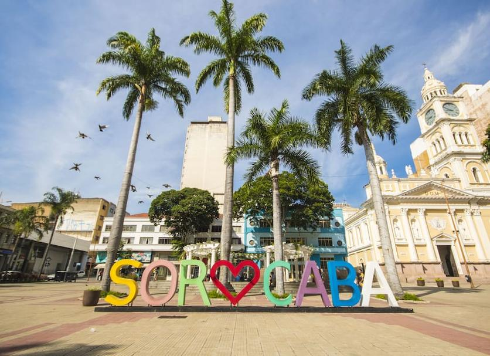

Sorocaba
Cidade com vocação industrial, conta também com numerosos parques, ciclovias e uma forte preocupação com
urbanismo e qualidade de vida no espaço público.
Pontos Turísticos
- Centro Histórico (praça principal e edifícios históricos)
- Boulevard Iguatemi (shopping e gastronomia)
- Parque Fernando Ítalo Setti (grandes áreas verdes e lazer)
- Parque das Águas (lazer, monumentalidade das fontes)
- Parque Zoológico Municipal Quinzinho de Barros (zoológico)
